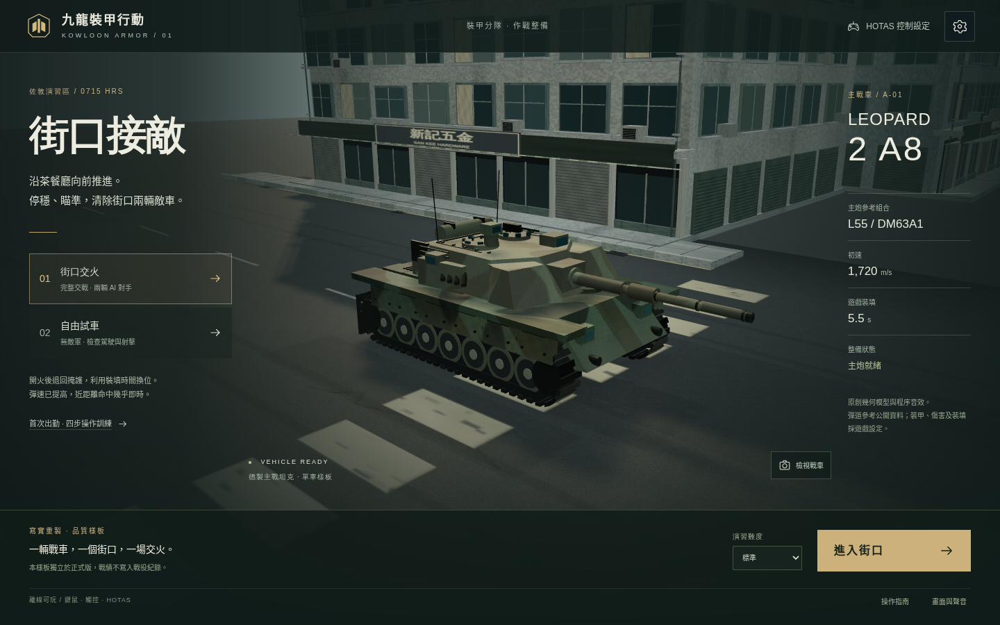
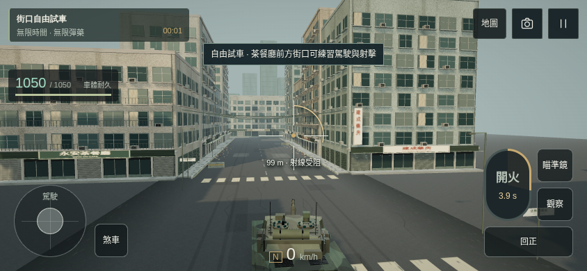
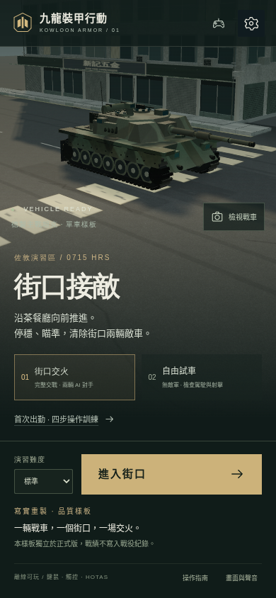
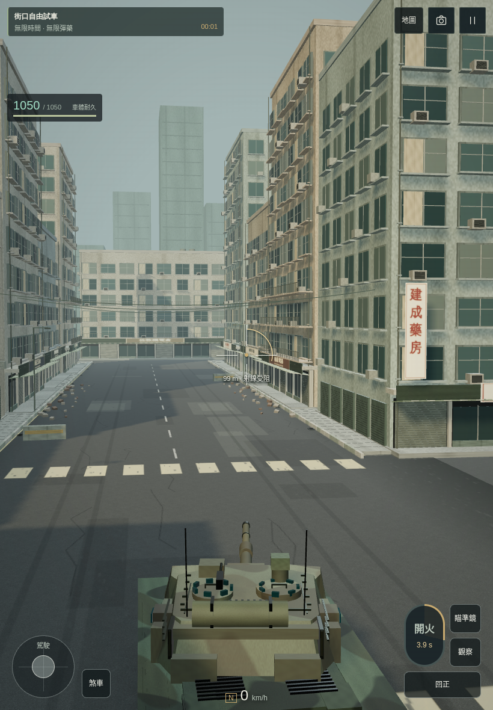

一輛 Leopard 2 A8、一個佐敦街口、一場完整交火。以下是原創程序模型與音效的方向樣板，不是商業大作品質承諾；使用者確認觀感後才擴展至全遊戲。
開啟離線可玩樣板 → 驗證報告與限制12 fps、768×432 逐格渲染，固定 1/60 秒模擬；播放速度沒有加快或慢放。自動操作從行駛、停車、瞄準、開炮、裝填至結算，沒有改敵方耐久、傷害或裝填。這不是實時錄屏，也不是 60 FPS 效能證明。音軌按同一事件時間軸離線渲染。
1440×900、DPR 1、medium、同一 Leopard 2 A8、同一出生位置與固定鏡位。來源場景測試頁完整渲染；另有下方獨立 HTML 操作畫面。




先播原版 5 秒，空白 1 秒後播樣板。相同總音量 0.7、120 mm、引擎／音樂關閉，沒有音量正規化；音量差異本身不代表品質提升。原創程序音效，並非真實錄音。
樣板車外 · 樣板車內 · 近處敵炮 · 遠處敵炮 · 建築遮擋 · 訊號與音源生命週期紀錄